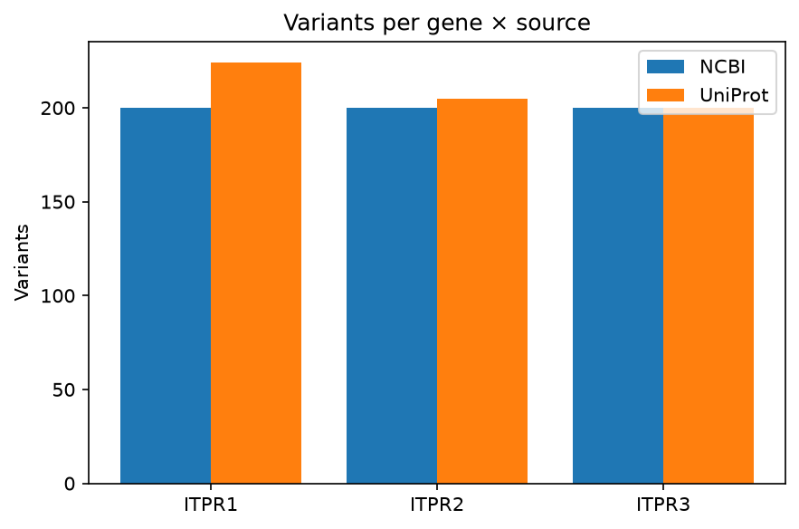
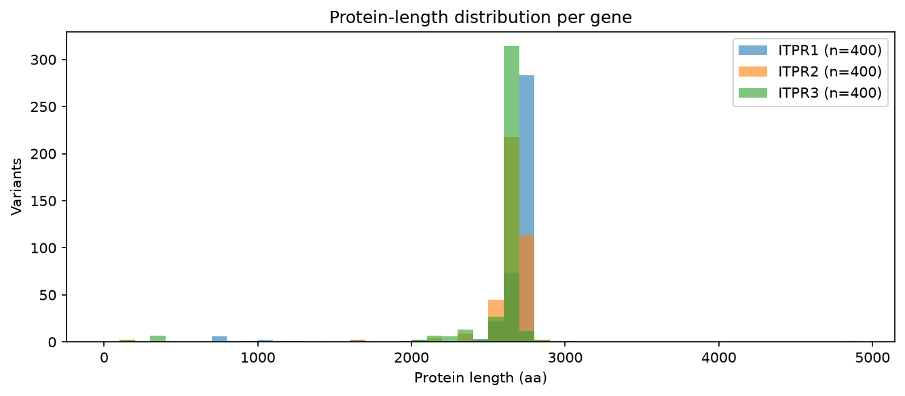

_Generated 2026-08-18 12:33:01_
ITPR1, ITPR2, ITPR3(any)NCBI, Ensembl, UniProtno_Notes:_ Headless run of preset 'ip3r'.


Disagreement between sources on the maximum protein length flags incomplete or fragmented annotation, which is how a real gene ends up recorded as two short models or none at all.
| Gene | Per-source max length | Δ | Flag |
|---|---|---|---|
| ITPR1 | NCBI=3001, UniProt=2779 | 222 | ⚠️ |
| ITPR2 | NCBI=2806, UniProt=2802 | 4 | ok |
| ITPR3 | NCBI=4853, UniProt=2860 | 1993 | ⚠️ |
Variants were aggregated from NCBI Entrez (Bio.Entrez), Ensembl REST and UniProt REST. Predicted 3D structures were pulled from the AlphaFold Protein Structure Database; structural homologs were (optionally) searched via Foldseek. Pairwise alignments use BLOSUM62 with open / extend gap penalties of −10 / −0.5. The multiple sequence alignment is a star alignment seeded by the longest sequence (or MAFFT --auto when available). Pairwise identity excludes columns where both rows are gaps. Neighbor-joining trees are constructed via Bio.Phylo.TreeConstruction with the 1 − identity distance matrix. Per-column conservation is 1 − Shannon entropy normalized to min(n_rows, 21). Novel-paralog candidates are scored on six independent criteria (size, domain signature, structural fold, sequence outlier, taxonomic breadth, cluster exclusion); see discovery/candidates.tsv for full evidence per candidate.
_Report generated by the Protein Variant Finder._